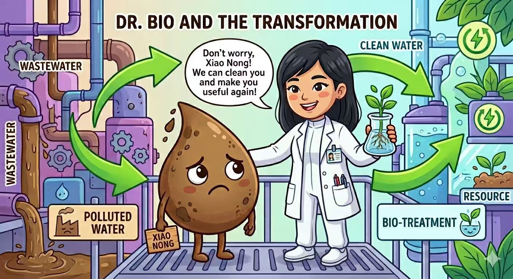
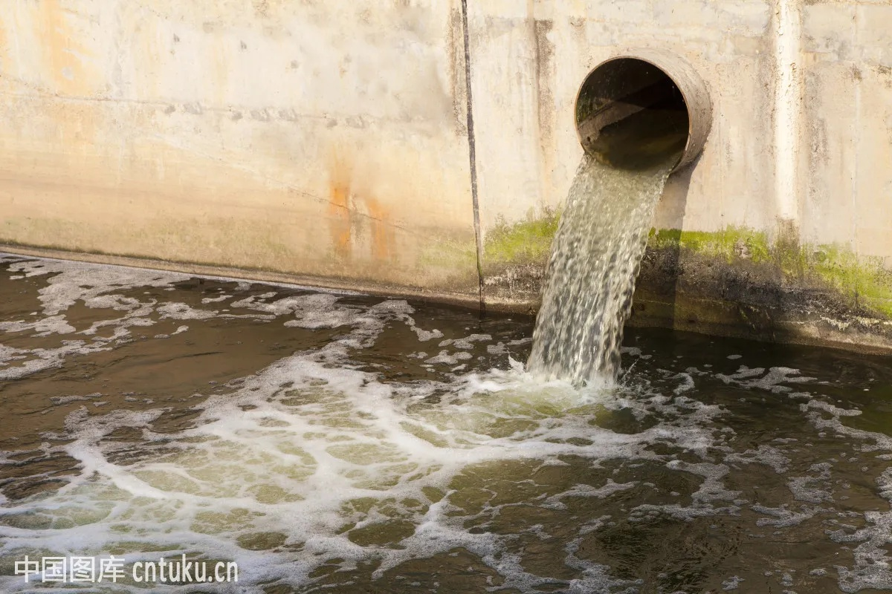
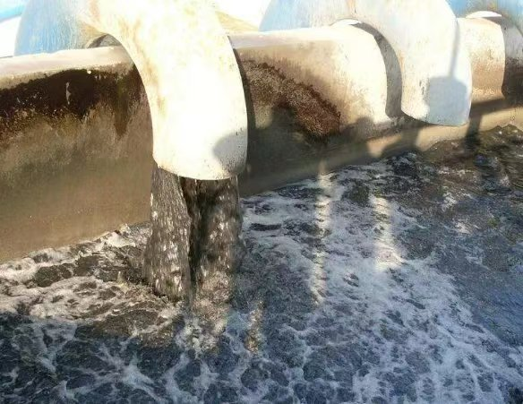
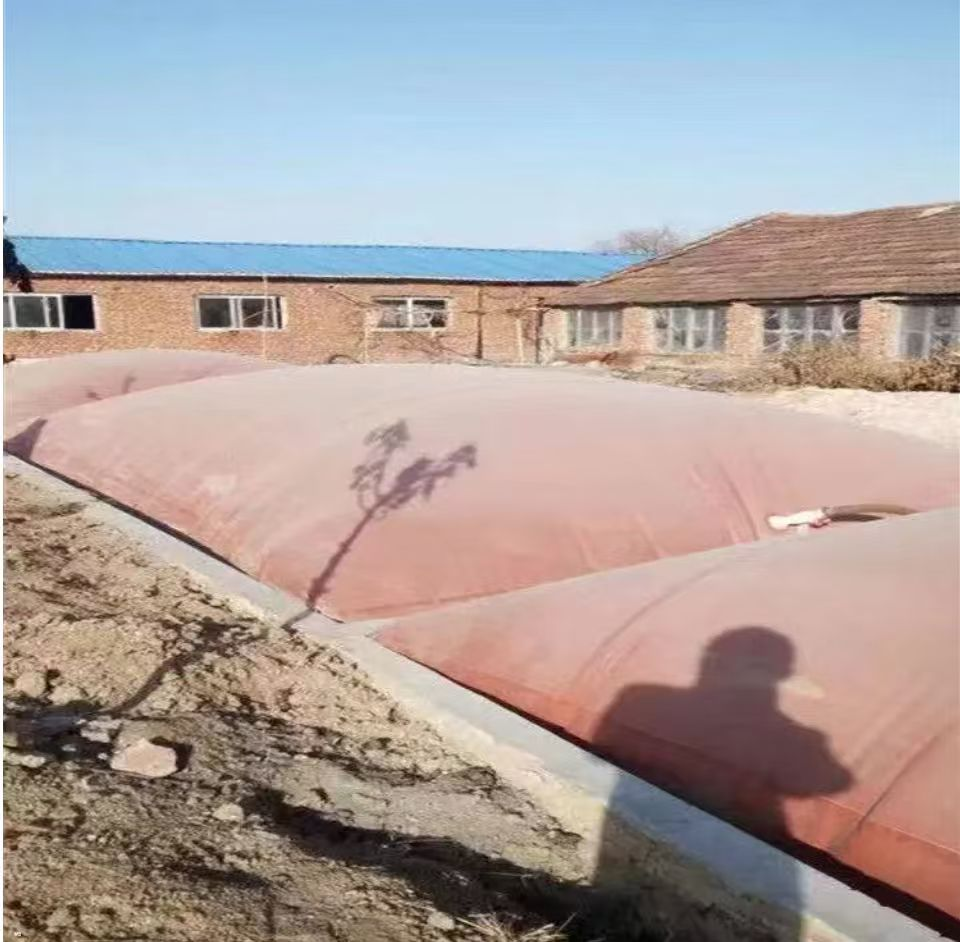
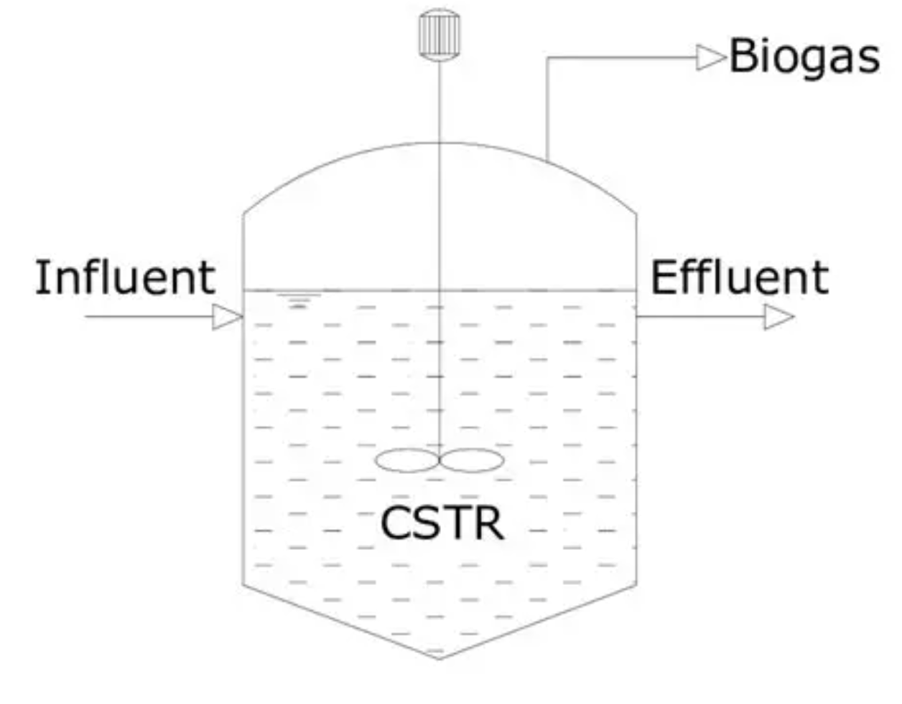
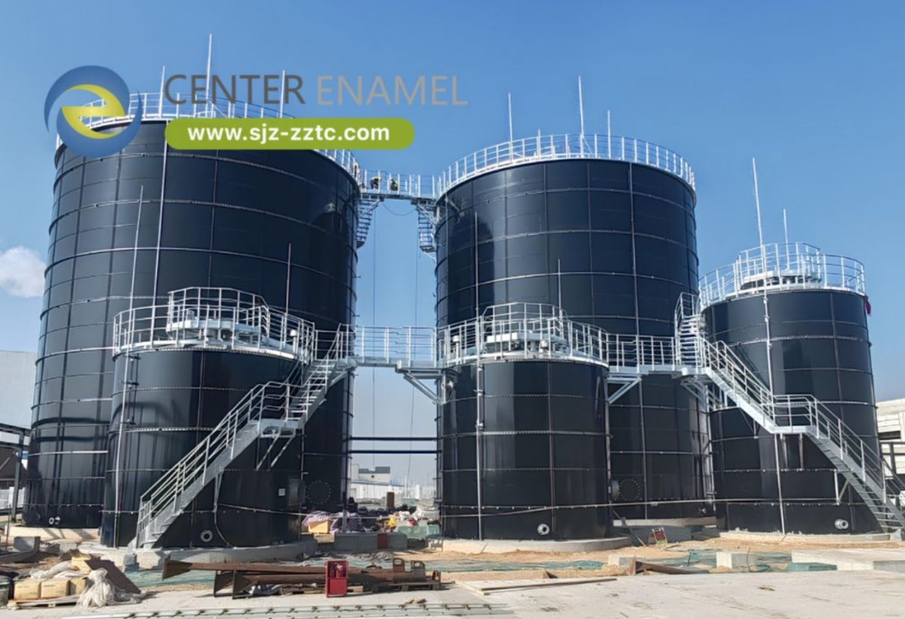
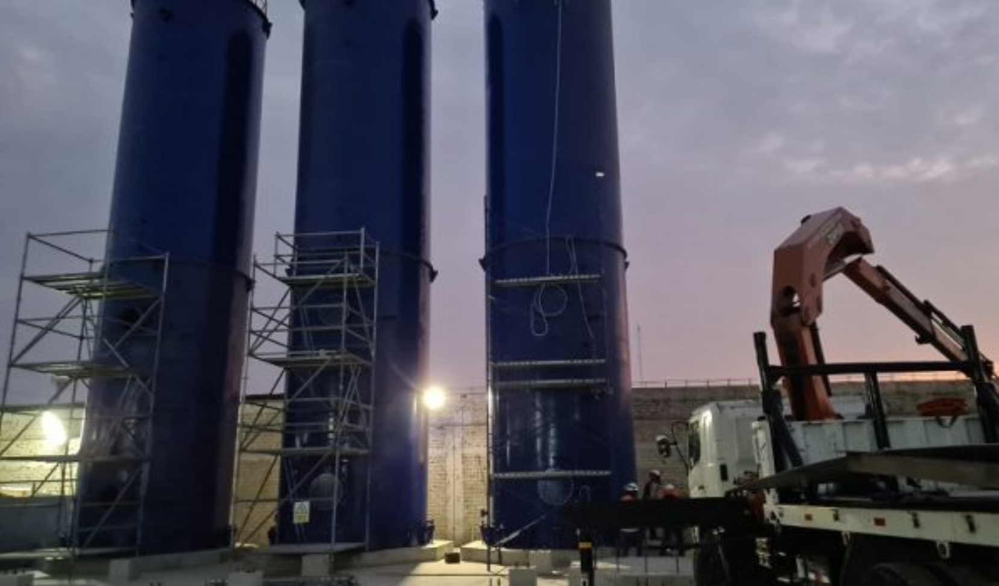
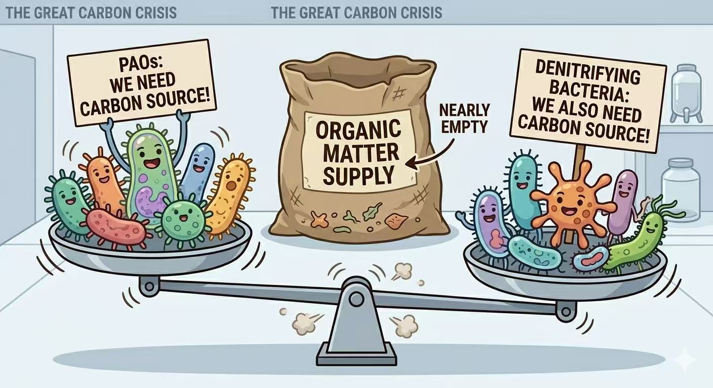
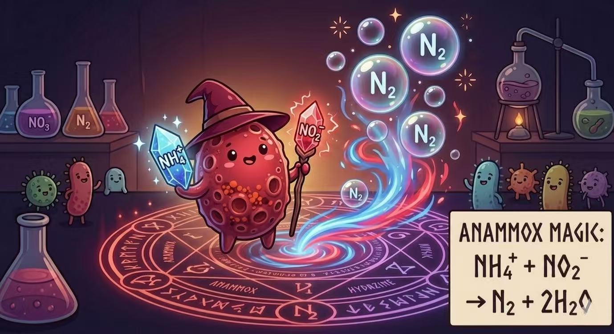

Group Presentation · Biochemistry
Anaerobic and Anoxic
Biotreatment of Waste
Biotreatment of Waste
How microbes turn waste into resources — a journey through treatment technologies
Character A · 甲
Xiao Nong 小浓
High-strength organic wastewater.
Our protagonist on this journey.
Our protagonist on this journey.
Character B · 乙
Dr. Bio
Environmental engineer & guide.
Explains the science along the way.
Explains the science along the way.

02 — Foundation
What is Waste?
Not all wastewater is "high-potential" — the distinction matters for how we treat it
💧 Weak sewage
Low concentration
- COD typically < 200 mg/L
- Urban runoff, domestic sewage
- Pollutant as nuisance
- Goal: remove & discharge
🏭 Wastewater (High-Strength)
High concentration
- COD typically > 1,000 mg/L
- Breweries, food processing, landfill leachate
- Pollutant as potential resource
- Goal: treat AND recover
Key insight: High-strength "waste" contains chemical energy — COD = stored energy waiting to be harvested
Why biotreatment?
- Microorganisms naturally break down organic compounds
- Can be engineered to recover energy (biogas) and nutrients (N, P)
- Lower energy input than chemical/physical treatment for high-strength waste
03 — Meet the Protagonist
Xiao Nong's Profile
High-strength wastewater from a brewery — high concentration sometimes can = high potential
⚠ High COD
5,000 mg/L
Organic matter — depletes O₂ in rivers, kills fish
→ Energy potential
⚠ High NH₄⁺
200+ mg/L
Ammonia nitrogen — toxic to aquatic life, causes eutrophication
→ Nitrogen resource
⚠ High P
30+ mg/L
Phosphorus — triggers algal blooms, eutrophication
→ Fertilizer potential


High concentration ——> High potential
The bigger the problem, the bigger the opportunity for resource recovery
The bigger the problem, the bigger the opportunity for resource recovery
04 — Core Concepts
Anaerobic vs Anoxic
Two oxygen-free environments — completely different microbial strategies
Quick check — drag each label to the correct environment
DROP ZONE A
?
DROP ZONE B
?
ZONE A clues
Zero O₂ · produces CH₄ · electron acceptor: CO₂
ZONE B clues
No O₂ · has NO₃⁻ · produces N₂
ANAEROBIC
ANOXIC
⚫ ANAEROBIC
Zero O
- No (strictly zero)
- Electron acceptor: CO₂ / organic compounds
- End product: CH₄ + CO₂ (biogas)
- Carbon source: Organic matter (oxidised)
- Use: COD removal & energy
🔵 ANOXIC
No O, has NO₃⁻
- No (but NO₃⁻ present)
- Electron acceptor: NO₃⁻ or NO₂⁻
- End product: N₂ gas
- Carbon source: Organic matter (as electron donor)
- Use: Nitrogen removal
A²/O note: Real systems like A²/O combine Anaerobic + Anoxic + Oxic zones — no single environment handles everything alone
Route A · Stop 1
The Biogas Pit Era
The original anaerobic reactor — slow but foundational. CSTR (Continuously Stirred Tank Reactor) is its engineered upgrade.
📷 Biogas Pit — 沼气池

4-Stage Relay Reaction
📷 CSTR Reactor — 连续搅拌反应器

Quick check — what does the stirrer actually do in a CSTR?
A · It pumps wastewater in and out of the reactor
B · It separates biogas from the liquid
C · It keeps the contents uniformly mixed — preventing dead zones and improving microbe-substrate contact
D · It heats the reactor to optimal temperature
Why it matters: Without mixing, heavy sludge settles at the bottom and fresh wastewater short-circuits straight to the outlet — microbes never contact their substrate.
The stirrer creates a uniform concentration everywhere, so every microbe has equal access to food.
This is the key upgrade from a simple biogas pit → CSTR.
CSTR upgrade: Adds mechanical mixing → more uniform environment, prevents dead zones, slightly faster than open pit
HRT: 20–30 days
COD removal: ~50–70%
Biogas: 60% CH₄
- First proof that high-COD waste → biogas energy is possible
- Established the 4-stage anaerobic pathway — still the basis of all anaerobic processes
- Significant COD reduction without chemical inputs
- Biogas can power the treatment plant itself
Conceptual breakthrough: Waste = energy source
- HRT 20–30 days — enormous reactor volume needed
- Microbes are not retained — wash out with effluent
- No N or P removal — only handles COD
- Low biomass concentration → low reaction rate
Core problem: Microbes leave the reactor — you can't keep them working
Comparison will grow as you learn more technologies
| Parameter | Biogas Pit / CSTR |
|---|---|
| HRT | 20–30 days |
| Biomass retention | ❌ Poor (washout) |
| COD removal | 50–70% |
| Reactor volume | Very large |
| N & P removal | ❌ None |
Route A · Stop 2
The UASB Revolution
Up-flow Anaerobic Sludge Blanket — Prof. Lettinga's 1970s breakthrough that changed everything
Key Innovation: Keep the Microbes
Innovation 1
Granular Sludge
Microbes self-aggregate into dense granules (1–3 mm). Dense enough to settle against upward flow — retained in reactor.
Innovation 2
Three-Phase Separator
V-shaped baffle at top: separates gas ↑, liquid →, sludge ↓ simultaneously — no moving parts.
HRT: 6–12 hours
Speed-up: ~40×
COD removal: 70–90%
- Solves biomass washout — granules stay, treatment is continuous
- HRT: 6–12 hours vs 20–30 days — same volume, 40× faster
- High biomass concentration → high reaction rate
- No moving parts in separator — low maintenance
The insight: Separate HRT from SRT (sludge retention time) — keep microbes long, process water fast
- Granule formation can take months — long start-up
- Sensitive to high suspended solids (can clog sludge bed)
- Still no N or P removal
- Performance drops with very high-strength or toxic waste
- Maximum up-flow velocity limited → throughput ceiling
Next challenge: Push velocity higher, handle more concentrated waste → EGSB
| Parameter | Biogas Pit / CSTR | UASB |
|---|---|---|
| HRT | 20–30 days | 6–12 hours ✅ |
| Biomass retention | ❌ Poor | ✅ Granular sludge |
| COD removal | 50–70% | 70–90% ✅ |
| Up-flow velocity | ~0.5 m/h | 1–3 m/h |
| N & P removal | ❌ None | ❌ None |
| Start-up time | Weeks | Months (granule formation) |
Route A · Stop 3
The EGSB — Expanding the Blanket
Expanded Granular Sludge Bed — higher velocity, taller reactor, expanded sludge bed
Same principle, higher velocity
UASB — real installation

EGSB — real installation

Expanded bed = better mixing — granules are in constant gentle motion → better contact between wastewater and microbes → faster degradation
HRT: 2–6 hours
Up-flow: 4–10 m/h
COD removal: 80–95%
Handles: Very high-strength
- Handles very high COD waste (up to 50,000 mg/L) — UASB struggles above ~15,000
- Better mass transfer → higher volumetric loading rate
- Less clogging — expanded bed self-cleans
- Smaller footprint than UASB for same throughput
- Requires effluent recycle pump — energy cost
- More complex operation — velocity must be carefully controlled
- Granule loss possible if velocity too high
- Still no N or P removal
- Membrane fouling not addressed — biomass can escape
Next challenge: Retain even the finest biomass → couple with membrane → AnMBR
| Parameter | Biogas Pit | UASB | EGSB |
|---|---|---|---|
| HRT | 20–30 days | 6–12 h | 2–6 h ✅ |
| Up-flow velocity | ~0.5 m/h | 1–3 m/h | 4–10 m/h ✅ |
| Max COD load | Low | ~15,000 mg/L | ~50,000 mg/L ✅ |
| Sludge bed state | Settled | Packed blanket | Expanded (fluidised) |
| COD removal | 50–70% | 70–90% | 80–95% ✅ |
Route A · Stop 4
EGSB + AnMBR
Anaerobic Membrane Bioreactor — retain everything, lose nothing
EGSB + Membrane Filtration
Result: Run at very high biomass concentrations (20–40 g VSS/L vs 8–12 in EGSB) → fastest degradation rate yet
HRT: < 2 hours
Biomass: 20–40 g/L
COD removal: >95%
Effluent SS: ~0
- Ultimate biomass retention — no cell loss
- Extremely high loading rates — smallest reactor footprint of all anaerobic systems
- Excellent effluent quality for reuse or downstream treatment
- Can handle toxic or inhibitory compounds — slow-growing specialised microbes are retained
- Membrane fouling — requires periodic cleaning (energy + chemicals)
- Biogas can get trapped in membrane → needs degassing system
- Still no N or P removal — must be followed by Route B treatment
Route A conclusion: COD → handled. Energy → recovered. Now we need Route B for nitrogen and phosphorus.
| Parameter | CSTR | UASB | EGSB | EGSB+AnMBR |
|---|---|---|---|---|
| HRT | 20–30 d | 6–12 h | 2–6 h | <2 h ✅ |
| Biomass (g/L) | ~3–5 | ~15–20 | ~15–25 | 20–40 ✅ |
| COD removal | 50–70% | 70–90% | 80–95% | >95% ✅ |
| Effluent SS | High | Low | Low | ~0 ✅ |
| Complexity | Low | Medium | Medium-High | High |
Route B · Stop 1
The A²/O Process
Anaerobic–Anoxic–Oxic: three zones, three jobs — simultaneous C, N, P removal
Quick check — drag to arrange the A²/O zones in the correct order
1st
2nd
3rd
Anaerobic zone
- PAOs release P
- Store VFAs as PHA
EQUATIONS
CH₃COO⁻ + PAO → PHA
Poly-P → Pi (released)
C₆H₁₂O₆ → 2C₂H₅OH + 2CO₂
Poly-P → Pi (released)
C₆H₁₂O₆ → 2C₂H₅OH + 2CO₂
Anoxic zone
- Denitrifiers use PHA
- NO₃⁻ → N₂ gas
EQUATIONS
6NO₃⁻ + 5CH₃OH →
3N₂ + 5CO₂ + 7H₂O + 6OH⁻
(PHA as electron donor)
3N₂ + 5CO₂ + 7H₂O + 6OH⁻
(PHA as electron donor)
Oxic zone
- Nitrification: NH₄⁺→NO₃⁻
- PAOs over-absorb P
EQUATIONS
NH₄⁺ + 2O₂ → NO₃⁻ + 2H⁺ + H₂O
PO₄³⁻ + PAO → Poly-P
(over-absorption)
PO₄³⁻ + PAO → Poly-P
(over-absorption)
- First system to achieve simultaneous C, N, P removal
- Biological phosphorus removal — no chemicals needed
- Spatial separation → each microbial community thrives in its optimal zone
- Internal recycle links the oxic and anoxic zones — elegant engineering
Breakthrough: Wastewater treatment becomes integrated — one system, three problems solved
The Achilles' Heel: Carbon Competition

- PAOs (anaerobic zone) need organic carbon to store as PHA
- Denitrifiers (anoxic zone) need organic carbon as electron donor
- Low C:N ratio wastewater → not enough carbon for both
- Adding external carbon (methanol, acetate) = extra cost
- Still requires aeration energy for oxic zone
Key question: Can we remove nitrogen without needing organic carbon at all?
Route B starts here — comparison will grow
| Parameter | A²/O |
|---|---|
| C removal | ✅ Yes |
| N removal | ✅ Yes (via nitrification/denitrification) |
| P removal | ✅ Yes (biological) |
| Carbon source needed | ⚠ Yes — for denitrification & P release |
| Aeration energy | ⚠ High (oxic zone) |
| Sludge production | Moderate |
Route B · Stop 2
The Anammox Revolution
Anaerobic Ammonium Oxidation — no carbon, no oxygen, no problem
NH₄⁺ + 1.32 NO₂⁻ → 1.02 N₂ + 0.26 NO₃⁻ + 2H₂O

Who does this?
Anammox bacteria
- Autotrophic — fix CO₂, no organic C
- Strictly anoxic environment
- Deep red colour (haem protein)
- Doubling time: ~11 days (very slow)
What's needed?
Partial nitritation
- Need NO₂⁻, not NO₃⁻
- AOB convert: NH₄⁺ → NO₂⁻
- Stop nitrification at half-way
- Ratio: NH₄⁺ : NO₂⁻ ≈ 1 : 1.32
Multi-Zonal Anammox (Prof. Yongzhen Peng, Beijing Univ. of Technology): Anammox bacteria distributed across all three zones of A²/O — more stable, broader applicability
🔋 Carbon saved
~100%
No organic carbon needed for N removal — solved the carbon competition problem completely
⚡ Energy saved
~60%
No need to fully nitrify NH₄⁺ → NO₃⁻ → massive aeration energy reduction
🧪 Sludge reduced
>90%
Autotrophic, slow-growing bacteria produce far less excess sludge
🌍 N₂O reduced
Lower
Fewer nitrification steps → less N₂O (300× CO₂ warming potential)
- Anammox bacteria grow extremely slowly (doubling time ~11 days) — months of start-up
- Sensitive to temperature (optimal 30–40°C), dissolved oxygen, and pH
- Requires precise partial nitritation control — stopping at NO₂⁻ is tricky
- Mainly applied to high-ammonia sidestreams (digester reject water) — mainstream application still challenging
- P removal still needed separately
Future: Multi-zonal strategy aims to make Anammox work in mainstream wastewater → carbon-neutral WWTPs
| Parameter | A²/O | Anammox |
|---|---|---|
| N removal pathway | Nitrification + Denitrification | Direct NH₄⁺ + NO₂⁻ → N₂ |
| Carbon needed? | ⚠ Yes | ✅ No |
| Aeration energy | High | ~60% less ✅ |
| Sludge production | Moderate | >90% less ✅ |
| P removal | ✅ Yes (biological) | ⚠ Not included |
| Start-up time | Weeks | ⚠ Months |
| Operational complexity | Medium | High |
Final — Synthesis
Anaerobic vs Anoxic: Full Picture
After seeing all the technologies — how do these two strategies compare and complement each other?
| Feature | Anaerobic | Anoxic |
|---|---|---|
| O₂ | Strictly zero | Zero (but NO₃⁻ present) |
| Electron acceptor | CO₂ / organic C | NO₃⁻ or NO₂⁻ |
| Main product | CH₄ (energy!) | N₂ (harmless gas) |
| Primary role | COD removal + energy recovery | Nitrogen removal |
| Technologies | CSTR → UASB → EGSB → AnMBR | A²/O → Anammox |
| Carbon requirement | Consumes organic C | Needs C (A²/O) or none (Anammox) |
| Energy | Produces energy | Consumes energy (aeration in A²/O) |
| Sludge | Moderate | High (A²/O) / Very low (Anammox) |
They are complementary, not competing
Real wastewater treatment plants use both — Anaerobic first (remove COD, recover energy), then Anoxic/Oxic (remove N & P)
Real wastewater treatment plants use both — Anaerobic first (remove COD, recover energy), then Anoxic/Oxic (remove N & P)
The evolution in one sentence:
From "treat waste and discard" → to "recover energy, nitrogen, phosphorus, and water — leave nothing behind"
From "treat waste and discard" → to "recover energy, nitrogen, phosphorus, and water — leave nothing behind"
References
References
[1]
Zieliński, M., Kazimierowicz, J., & Dębowski, M. (2023). Advantages and limitations of anaerobic wastewater treatment — technological basics, development directions, and technological innovations. Energies, 16(1), 83. https://doi.org/10.3390/en16010083
[2]
Zhang, X., Fan, Y., Hao, T., Chen, R., Zhang, T., Hu, Y., Li, D., Pan, Y., Li, Y. Y., & Kong, Z. (2024). Insights into current bio-processes and future perspectives of carbon-neutral treatment of industrial organic wastewater: A critical review. Environmental Research, 241, 117630. https://doi.org/10.1016/j.envres.2023.117630
[3]
Zhang, X., Hao, T., Zhang, T., Hu, Y., Lu, R., Li, D., Pan, Y., Li, Y. Y., & Kong, Z. (2024). Towards energy conservation and carbon reduction for wastewater treatment processes: A review of carbon-neutral anaerobic biotechnologies. Journal of Environmental Chemical Engineering, 12(3), 112448. https://doi.org/10.1016/j.jece.2024.112448
[4]
Mariraj Mohan, S., & Swathi, T. (2022). A review on upflow anaerobic sludge blanket reactor: Factors affecting performance, modification of configuration and its derivatives. Water Environment Research, 94(1), e1665. https://doi.org/10.1002/wer.1665
[5]
D'Bastiani, C., Kennedy, D., & Reynolds, A. (2023). CFD simulation of anaerobic granular sludge reactors: A review. Water Research, 242, 120220. https://doi.org/10.1016/j.watres.2023.120220
[6]
Parihar, R. K., Burnwal, P. K., Chaurasia, S. P., et al. (2024). Unveiling the evolution of anaerobic membrane bioreactors: applications, fouling issues, and future perspective in wastewater treatment. Reviews in Environmental Science and Bio/Technology, 23, 949–988. https://doi.org/10.1007/s11157-024-09710-6
[7]
Elmoutez, S., Abushaban, A., Necibi, M. C., Sillanpää, M., Liu, J., Dhiba, D., Chehbouni, A., & Taky, M. (2023). Design and operational aspects of anaerobic membrane bioreactor for efficient wastewater treatment and biogas production. Environmental Challenges, 10, 100671. https://doi.org/10.1016/j.envc.2022.100671
[8]
Deng, Z., Sun, C., Ma, G., Zhang, X., Guo, H., Zhang, T., Zhang, Y., Hu, Y., Li, D., Li, Y. Y., & Kong, Z. (2025). Anaerobic treatment of nitrogenous industrial organic wastewater by carbon-neutral processes integrated with anaerobic digestion and partial nitritation/anammox: Critical review of current advances and future directions. Bioresource Technology, 415, 131648. https://doi.org/10.1016/j.biortech.2024.131648
The End
Thank You — Q&A
The magical journey of waste continues...
Route A Summary
- Biogas Pit → concept proven
- UASB → biomass retained
- EGSB → velocity + load up
- AnMBR → ultimate retention
Route B Summary
- A²/O → C+N+P together
- Anammox → no carbon needed
- Multi-Zonal → real-world scale
Waste is not waste — it's a misplaced resource